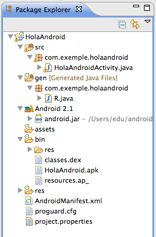

Android
2. Components Android
Creat per Isaac Muro

Creació del primer projecte
Crearem un projecte de prova, el mític HelloWorld.
Carpetes
- La carpeta /src conté els fitxers .java amb el codi del projecte. Escriureu el codi de la vostra aplicació en aquesta carpeta
- La carpeta /gen conté el fitxer R.java, un fitxer generat pel compilador que serveix de referència a tots els recursos del vostre projecte. NO TOCAR
- La biblioteca de funcions és la carpeta Android ... NO TOCAR
- El directori /res conté tots els recursos que es fan servir a l’aplicació
- El directori /assets conté altres recursos que es fan servir a l’aplicació, com ara fitxers de text, bases de dades. NO TOCAR
- El fitxer AndroidManifest.xml és el fitxer on estan especificats els permisos i altres característiques de l’aplicació.
Components bàsics d'una aplicació Android
- Activitats
- Serveis
- Proveïdors de continguts
- Receptors broadcast
Activitats
- Una ”Activity” (activitat) representa una única pantalla amb una interfície d’usuari.
- Cada activitat és independent de l'altre
- En Android, les aplicacions poden activar activitats (pantalles) d’altres aplicacions
- Una activitat està implementada com una subclasse de la classe “Activity”.
Serveis
- Un ”Service” (servei) és un component que s’executa en el background (en el fons, que no es veu) per realitzar tasques per a treballs remots.
- No tenen components d’interfície d’usuari
- Poden fer les mateixes coses que una activitat, però no tenen interfície
- Són útils per realitzar coses que es volen realitzar durant un temps, p. ex. agafar dades del receptor GPS del telèfon
- Els serveis s’implementen com a classes derivades de la classe “Service”
Proveïdors de continguts
- Els ”content providers” (proveïdors de continguts) són interfícies per compartir dades entre les aplicacions.
- Són els més adequats per compartir conjunts de dades entre aplicacions.
- La informació es pot inserir, actualitzar, esborrar i consultar d’un proveïdor de continguts
- p. ex. els Contacts Provider proporcionen la informació dels contactes del telèfon a diferents aplicacions.
- Un content provider està implementat com una subclasse de “ContentProvider”
Receptors broadcast
- Els ”broadcast receivers” (receptors broadcast) són un component que respon a anuncis de sistema que van dirigits a totes les aplicacions del dispositiu (broadcast)
- El receptor simplement es queda en un estat latent esperant activar-se quan un esdeveniment al qual està subscrit succeeix.
- Els misstages broadcast els pot enviar tan el sistema com una aplicació
- p. ex. una aplicació pot anunciar que s’hanacabat de descarregar algunes dades.
- Un broadcast receiver està implementat com una subclasse de “BroadcastReceiver”
Intents
- Tres dels quatre tipus de components (activitats, serveis i receptors broadcast) s’activen per missatges asíncrons anomenats ”intents” (intencions).
- Un intent es crea amb un objecte de la classe Intent, que defineixen un missatge per activar un component específic (intent explícit) o un tipus de component (intent implícit)
- Els misstages broadcast els pot enviar tan el sistema com una aplicació
- p. ex. una aplicació pot anunciar que s’hanacabat de descarregar algunes dades.
- Un broadcast receiver està implementat com una subclasse de “BroadcastReceiver”
El fitxer AndroidManifest.xml
- Per anunciar al sistema els components que farà servir l’aplicació
- Identifica els permisos que necessita l’aplicació (com ara, permisos per accedir a Internet).
- Declara la versió de la plataforma, el nivell d’API mínim que necessita l’aplicació, basat en l’API que fa servir.
- p. ex. una aplicació pot anunciar que s’hanacabat de descarregar algunes dades.
- Un broadcast receiver està implementat com una subclasse de “BroadcastReceiver”
ApiDemos I
Es pot aprendre molt de les funcionalitats que ens ofereix Android veient exemples. Instaleu l'exemple ApiDemos.
- En l'Eclipse,
- File -> New -> Project -> Android Sample Project
- Selecciona el nivell d'API
- I després selecciona el projecte ApiDemos.
ApiDemos II
Api Demos que us seran útils.
- Views ->Layouts, App -> Alert Dialogs, App -> Notification, App -> Preference, App -> Action Bar, App -> Activity -> Finish Affinity, App -> Activity -> Screen Orientation
- Views -> Image Button, App -> Activity -> Animation
Depurar Codi I
Per registrar tots els problemes i esdeveniments que tenen lloc al sistema, Android utilitza un sistema de Logs anomenat LogCat. En l'Eclipse: Window -> Show View -> Other -> LogCat. En Aquesta vista podem veure tot els esdeveniments que passan, i filtrar per l'esdeveniment que nosaltres desitgem utilitzant les etiquetes o TAGs.
Depurar Codi II
Per registrar els nostres propis missatges, hem de decidir un TAG, i utilitzar la class Log. Aquesta classe disposa de varis métodes per generar diferents tipus de missatges.
- Log.e(): Errors
- Log.w(): Warnings
- Log.i(): Information
- Log.d(): Debugging
- Log.v(): Verbose
activitat
Creem una aplicació HelloWorld amb un text al fitxer string.xml. L'executem a una màquina virtual Android, i al telefon.